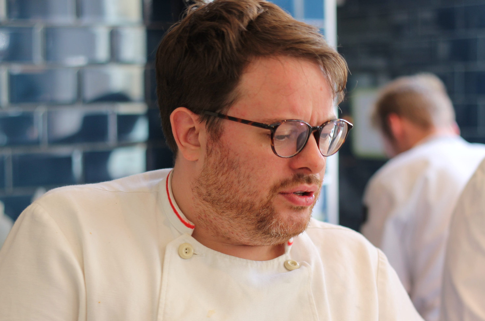
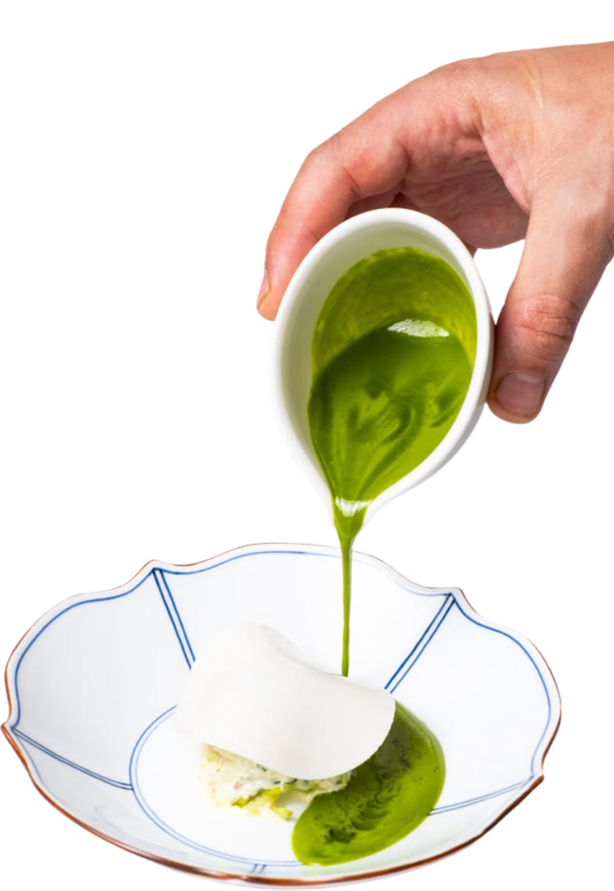

Visit
MON-TUE 6:30-11PM
WED-SAT 12-4:30PM, 6:30-11PM
SUNDAY CLOSED
London EC1V 9LT, United Kingdom
Follow
The Clove Club began life as a supper club, started by Isaac McHale, Daniel Willis, and Johnny Smith. In 2013, that idea found a permanent home inside Shoreditch Town Hall, a Grade II-listed building in the heart of Shoreditch.
The tasting menu changes with the seasons and leans on technique that never overshadows the ingredient. An extensive wine list runs alongside it, pairing contemporary winemakers with a selection of fine, classical Old World wines.
The Clove Club now holds two Michelin stars and a long list of honours, including the highest new entry to the World's 50 Best Restaurants in 2016 and the No. 1 spot in the Sunday Times Top 100. But the goal has stayed the same since day one: to create dining experiences that excite and surprise the senses.


Isaac McHale's interest in food started early. One of his first food memories is getting pakora as a treat from a local Indian restaurant at age seven. By fourteen, he had a Saturday job at his local fishmonger in Glasgow, learning to fillet fish and work with Scottish shellfish.
He worked in Glasgow kitchens before travelling to some of the best restaurants in the world, including Marque in Sydney, a stage at René Redzepi's Noma, and a stint under Tom Aikens on Elystan Street. He then joined Brett Graham's opening team at The Ledbury, where he spent six years and helped the restaurant earn its first, then second, Michelin star, eventually rising to Development Chef.
After cooking with the experimental Young Turks collective, McHale opened The Clove Club in Shoreditch Town Hall in 2013. As Chef-Patron, he has since led the restaurant to two Michelin stars and remains an active part of the international chef community, giving keynote speeches, cooking demonstrations, and collaborating on events around the world.
Visit
MON-TUE 6:30-11PM
WED-SAT 12-4:30PM, 6:30-11PM
SUNDAY CLOSED
Follow